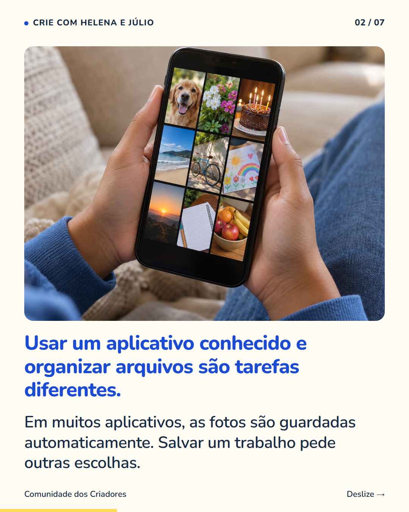
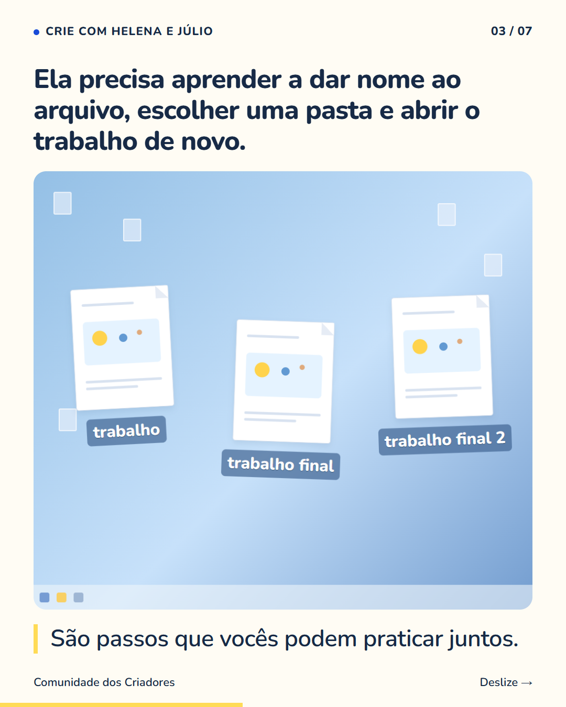
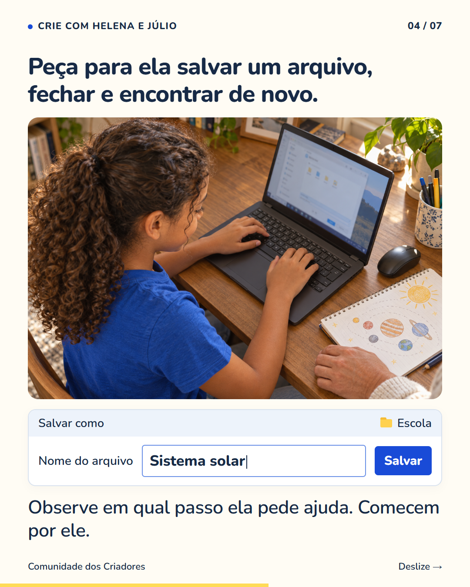
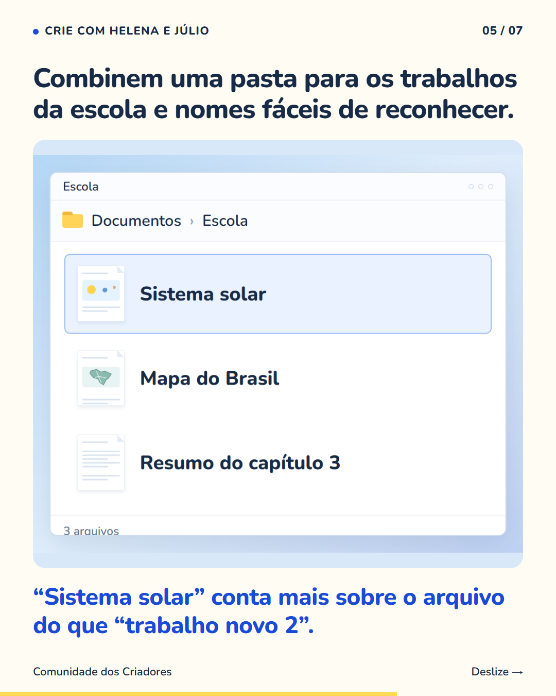
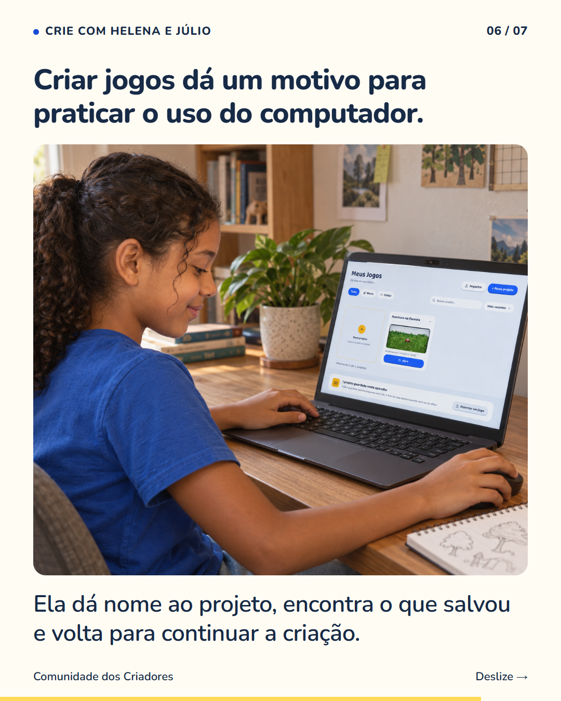
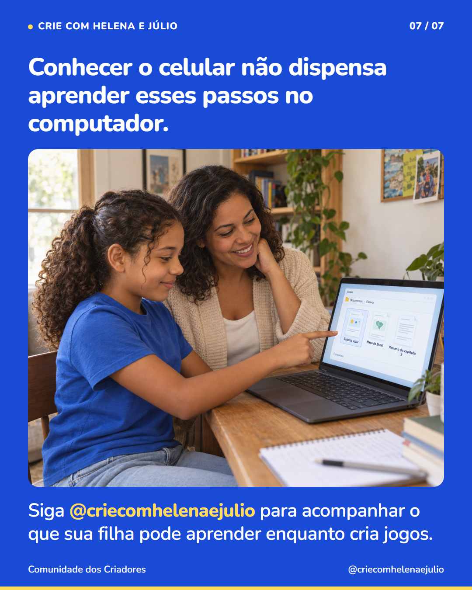

7 slides · 1080 × 1350 · Copy revisada · Cenas novas






Dar nome a um arquivo parece óbvio para quem já aprendeu. Para uma criança, pode ser novidade. Se sua filha se perde procurando o trabalho da escola, peça para ela mostrar como salva. Deixe que use o mouse e explique o que está tentando fazer. Assim vocês descobrem qual passo precisa de ajuda. Um combinado simples é manter os trabalhos numa pasta conhecida e usar nomes que descrevam o conteúdo. Depois, pratiquem fechar e abrir o arquivo novamente. Criar um jogo também exige voltar a um projeto para continuar. Há um motivo para aprender: ela quer encontrar a própria criação e acrescentar a próxima ideia. A organização ganha uma função que ela consegue ver. Siga @criecomhelenaejulio para acompanhar o que sua filha pode aprender enquanto cria jogos.